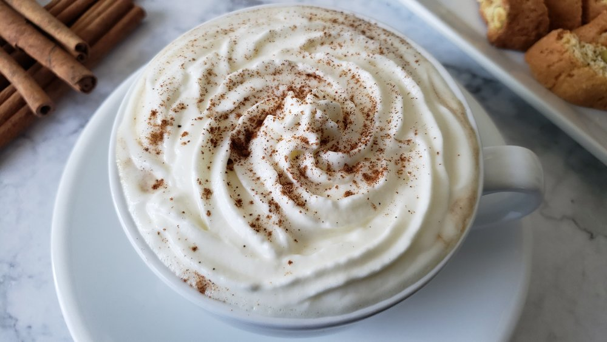

Espresso con Panna

Description
"The surprising addition of sour cream may catch some off guard, but they will invariably be won over by the subtle harmonies of this rich blend." - Eorzean Database
- Prep time: 10 minutes
- Cook time: 5 minutes
- Yields 2 servings
Ingredients
Topping
- 1/2 cup (140g) sour cream
- 1/2 cup (120 mL) whipping cream
- 2 tbsp (20 g) sugar
- cinnamon (for garnish)
Espresso
- 1 cup (250 mL) water
- 5 tbsp (14 g) ground coffee
Steps
Topping
- Combine the sour cream, whipping cream, and sugar in a medium bowl and whip it with a hand mixer, stand mixer, or by hand using a whisk until it holds stiff peaks.
- Prepare a pastry bag and tip and spoon in the cream.
- Refrigerate the cream until you are ready to serve.
- Set the cinnamon aside until you are ready to serve.
Note: A pastry bag is not required. The cream can be spooned onto the coffee from the inside edge of the cup to create a floating layer.
Espresso
- Bring the water to a boil and pour it into the lower compartment of a moka pot.
- Put the funnel in place and fill it with ground coffee.
- Secure the upper compartment of the moka pot and place it on a burner set to medium high heat.
- Listen for a gurgling sound and open the lid.
- When coffee is no longer flowing, remove the pot from the heater and pour into a demitasse coffee cup.
Note about coffee: Prepare the coffee according to your preference using any method. Keep in mind that a bold cup balances better with the flavors of the topping.
Assembly
- Pipe the cream starting from the edges of the cup in a spiral pattern.
- Dust the top of the cream with a pinch of cinnamon.
- Serve immediately and enjoy.
Recipe from "A Recipe Reborn.""